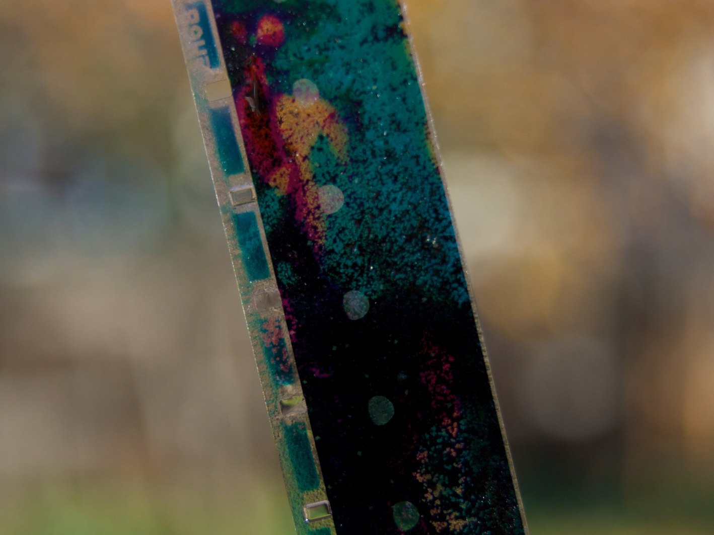

What we lost to the digital realm
In As We May Think, Vannevar Bush imagines what the future would look like, and while his vision is strikingly similar to our present reality, his vision is fundamentally an analog one. He writes about moving parts and chemistry, way before binary systems and thinking came into the forefront of technology.
Bush talks at length about dry photography and film emulsion, and how he imagines that the spread of images can be faster. He comes close to describing Iron Man's Jarvis (Please excuse my MCU reference, we're all really tired of these movies) when he describes the scientist walking around the lab and recording his thoughts without needing to sit down. What's interesting about this, is that he describes machines that connect to more machines that all exist mechanically on top of each other.

At least personally, I think what he's talking about is way cooler than what we have now. The memex is something that is way more human than what I'm typing on at the moment. I think that the more we lean on cyber space, we obviously lose touch with our own spatial awareness and the third dimension. The more we type, the more we become the screen and lose the assosiative thought process that Bush is talking about. Then again, the primary problem with the internet nowadays is that it has become corporatized to the point that being online is synonymous with consuming some sort of media. Rather that a network, it's a platform for us to be fed dopamine hits in between our ads.